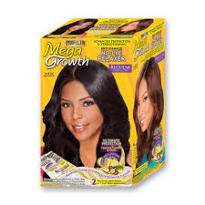
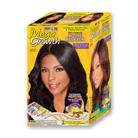

A relaxer is a type of lotion or cream generally used by people with tight curls or very curly hair which makes hair easier to straighten by chemically "relaxing" the natural curls. The active agent is usually a strong alkali, although some formulations are based on ammonium thioglycolate or formaldehyde.
 


| Price | Stock Availability | Weight | Complection | Height | Form | Barcode |
|---|---|---|---|---|---|---|
| R94.99/R124.99 | 75 | 10 grams | Light to Dark | 0.33 to 0.67 | Cicle or Square | 02781103642 |